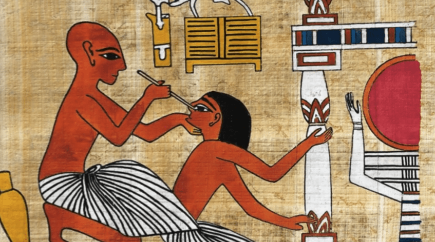
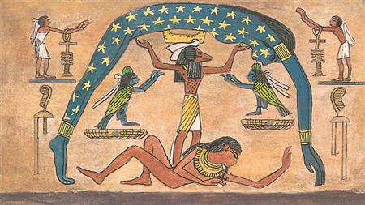
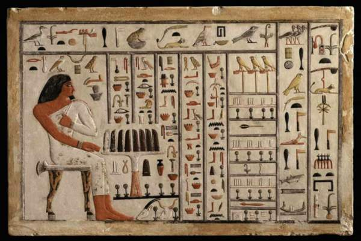
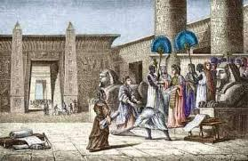

حضارة لم تكن تقوم على السحر أو الخرافات، بل على علم وتجارب وابتكار ومدارس ومؤسسات تعليمية سبقت عصرها بآلاف السنين.
منذ آلاف السنين، كانت مصر القديمة واحدة من أكثر الحضارات تقدمًا في مجال العلوم والمعرفة. لم يكن العلم عند الفراعنة مجرد محاولات بسيطة لفهم الطبيعة، بل كان منهجًا متكاملاً يعتمد على الملاحظة الدقيقة والتجربة والخبرة العملية. فقد برع المصريون في الطب، وطوروا أدوات وأساليب جراحية متقدمة، كما ابتكروا طرقًا دقيقة في التحنيط مكنتهم من حفظ الأجساد لآلاف السنين. وفي الفلك، استطاعوا تحديد طول السنة الشمسية تقريبًا بدقة مذهلة، ووضعوا تقويمًا استخدم في الزراعة والاحتفالات الدينية. أما في الرياضيات والهندسة، فقد وصلت مهاراتهم إلى مستوى مدهش سمح لهم ببناء الأهرامات، وحساب المساحات، ووضع أسس القياس التي اعتمد عليها العالم فيما بعد. لم يكن تقدمهم العلمي وليد الصدفة، بل نتيجة وجود منظومة تعليمية حقيقية تضمنت مدارس خاصة بالكتبة والعلماء، حيث يتعلم الطلاب القراءة والكتابة والحساب، ثم ينتقلون إلى تخصصات أعمق مثل الطب والهندسة والفلك. هذه المؤسسات العلمية تُعد من أقدم المدارس والجامعات في التاريخ الإنساني. وبفضل هذا النظام المتقدم، أصبحت مصر القديمة مركزًا للمعرفة، ووجهة للباحثين من العالم القديم. في هذا القسم، نستعرض أهم العلوم التي تفوق فيها الفراعنة، وكيف استطاعوا تأسيس حضارة قائمة على العقل والخبرة والتنظيم العلمي، وهي العلوم التي سنفصلها في صفحات مستقلة لكل علم على حدة لضمان عرض شامل وممتع للقارئ.

مناهج علاجية متقدمة وعمليات جراحية مذهلة.

تقويم دقيق وقدرة على حساب مواقع النجوم.

أسس القياس والمساحة وبناء المعابد والأهرامات.

مؤسسات علمية منظمة لإعداد الكتبة والعلماء.